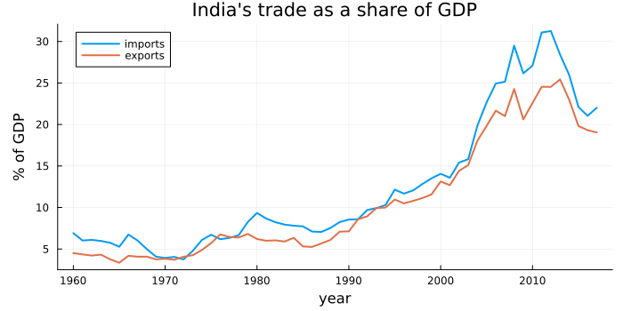
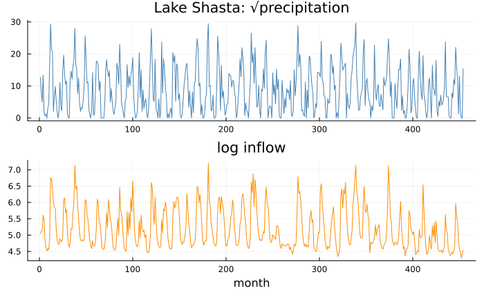
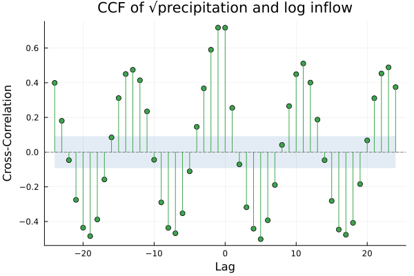
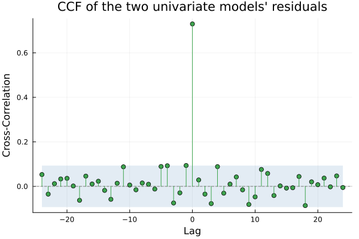
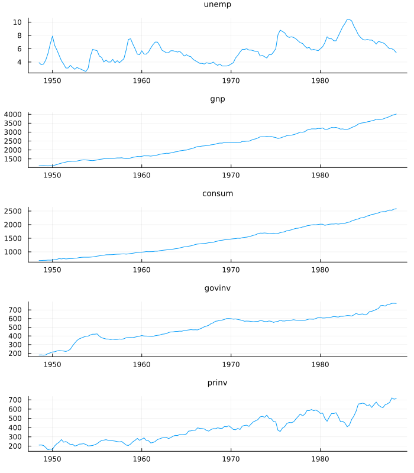
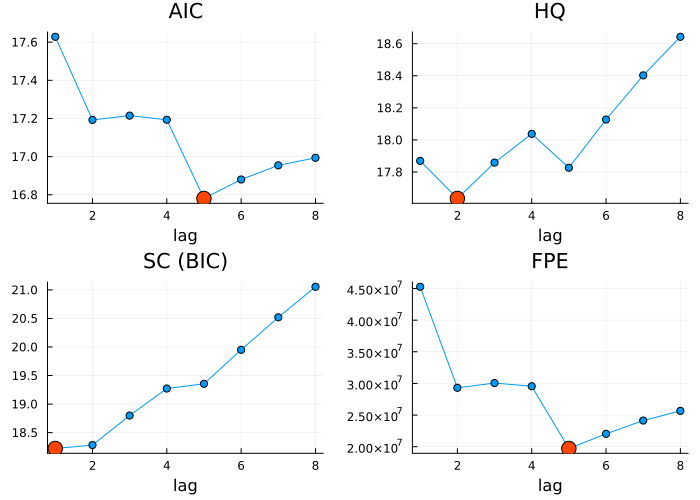
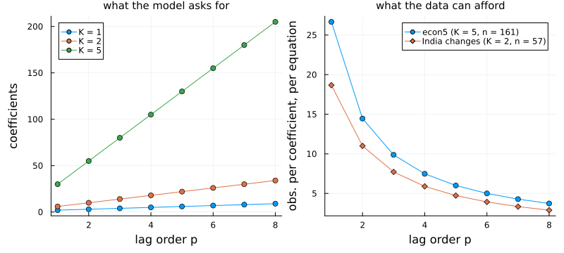
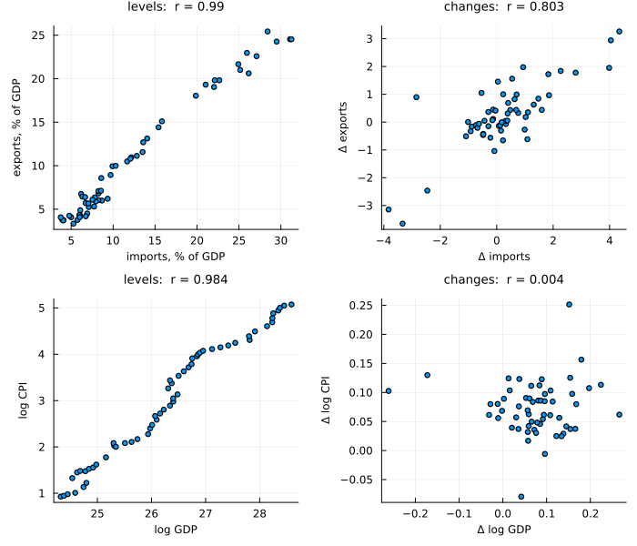

Two Series at Once
using TSAnalytics, Plots, Statistics
g = dataset("global_economy")
ix = findall(==("India"), g.Country)
yr = Int.(g.Year[ix])
imports = Float64.(g.Imports[ix])
exports = Float64.(g.Exports[ix])
println(length(yr), " annual observations, ", first(yr), " to ", last(yr))
println("imports peak at ", round(maximum(imports), digits=1), "% of GDP in ", yr[argmax(imports)],
"; exports at ", round(maximum(exports), digits=1), "% in ", yr[argmax(exports)])58 annual observations, 1960 to 2017
imports peak at 31.3% of GDP in 2012; exports at 25.4% in 2013plot(yr, [imports exports]; label=["imports" "exports"], linewidth=2, legend=:topleft,
xlabel="year", ylabel="% of GDP", title="India's trade as a share of GDP",
left_margin=5Plots.mm, bottom_margin=3Plots.mm, size=(700,350))
India's imports and exports of goods and services, each as a percentage of GDP, one value a year from 1960 to 2017. These are World Bank indicators, shipped in the package as part of global_economy from Hyndman and Athanasopoulos' tsibbledata; the Reserve Bank of India tracks the underlying flows quarter by quarter in India's balance of payments. For three decades both lines sit in single digits. From the early 1990s they climb together; imports peak in 2012 and exports a year later, and both then fall back.
Part IV gave you everything needed to model either line on its own. What does modelling them together buy? The honest answer is that sometimes it buys nothing, and that trying costs more than it looks. This chapter shows how to tell, and ends at the two problems the rest of this Part exists to solve.
The obvious attempt
Start with a pair where the direction is not in doubt. climhyd is Shumway and Stoffer's own cross-correlation example: 454 consecutive months of weather and inflow at Lake Shasta in northern California. Rain falls, and sooner or later it reaches the reservoir.
c = dataset("climhyd")
println("months with zero precipitation: ", count(==(0), c.Precip))months with zero precipitation: 51precip = sqrt.(Float64.(c.Precip)) # the zeros rule out a log
inflow = log.(Float64.(c.Inflow))
p1 = plot(precip; title="Lake Shasta: √precipitation", legend=false, color=:steelblue)
p2 = plot(inflow; title="log inflow", legend=false, color=:darkorange, xlabel="month")
plot(p1, p2; layout=(2,1), link=:x, size=(700,420))
Both series carry the same annual rhythm of wet winters and dry summers. Chapter 5 correlated a series with a shifted copy of itself; the cross-correlation function does the same with a shifted copy of the other series.
r_raw = ccf(precip, inflow, 24)
at(r, k) = round(r.values[r.lags .== k][1], digits=3)
println("lag -1: ", at(r_raw, -1), " lag 0: ", at(r_raw, 0), " lag +1: ", at(r_raw, 1))lag -1: 0.718 lag 0: 0.717 lag +1: 0.255plot(r_raw; title="CCF of √precipitation and log inflow")
The value at lag k is the correlation between precip[t+k] and inflow[t], so a negative lag pairs this month's inflow with precipitation from |k| months earlier. The picture is not symmetric, and the asymmetry is the information: 0.718 at lag −1 against 0.255 at lag +1. Last month's rain lines up with this month's inflow far better than next month's rain does. Precipitation leads.
Two cautions. "Leads" is a statement about prediction, not mechanism: that rain fills reservoirs we know from hydrology, and the same picture could come from two series responding at different speeds to a third. And most of the chart is not a relationship between the series at all. The waves repeating every twelve months are the annual cycle each has on its own; a cross-correlation of two autocorrelated series inherits their autocorrelation.
The sensible next step is to remove each series' own memory first: fit a univariate model to each — the same seasonal ARIMA, (1,0,1)(0,1,1)₁₂, not tuned for either — cross-correlate what is left, and regress one set of residuals on the other.
using StatsAPI: residuals
e_p = residuals(fit_sarima(precip, (1, 0, 1), (0, 1, 1, 12)))
e_i = residuals(fit_sarima(inflow, (1, 0, 1), (0, 1, 1, 12)))
r_res = ccf(e_p, e_i, 24)
println("lag -1: ", at(r_res, -1), " lag 0: ", at(r_res, 0), " lag +1: ", at(r_res, 1),
" band: ±", round(1.96 / sqrt(length(e_p)), digits=3))
slope(y, x) = cov(x, y) / var(x)
println("slope, inflow residual on precipitation residual: ", round(slope(e_i, e_p), digits=4))
println("slope, precipitation residual on inflow residual: ", round(slope(e_p, e_i), digits=2))lag -1: 0.094 lag 0: 0.73 lag +1: 0.029 band: ±0.093
slope, inflow residual on precipitation residual: 0.05
slope, precipitation residual on inflow residual: 10.65plot(r_res; title="CCF of the two univariate models' residuals")
The annual waves are gone, and nearly everything left sits at lag 0: a correlation of 0.73 between the two models' surprises in the same month, while lag −1 has fallen to 0.094 against a band of ±0.093. Once each series' own past has been used, rain and inflow move together within the month rather than one after the other.
For a reservoir this is nearly enough. On economic series each of its three weaknesses bites.
- It imposes a direction. The two regressions above are equally valid arithmetic and say different things. For rain and inflow you know which to run. For India's trade you do not: imported inputs become exports, and export earnings pay for imports.
- It cannot represent feedback. Each univariate model sees only its own past; if imports help predict exports and the reverse, neither model can see it.
- It throws away the covariance it found. A correlation of
0.73between the surprises means that when inflow comes in above its forecast, precipitation probably did too. Two separate forecasts, each with its own interval, cannot use that.
The idea
Put every series on the right-hand side of every equation. With two series and one lag:
\[\begin{aligned} x_t &= \nu_1 + a_{11}\, x_{t-1} + a_{12}\, y_{t-1} + u_{1t} \\ y_t &= \nu_2 + a_{21}\, x_{t-1} + a_{22}\, y_{t-1} + u_{2t} \end{aligned}\]
and in general, for a vector y_t of K series and p lags,
\[y_t = \nu + A_1 y_{t-1} + \dots + A_p y_{t-p} + u_t, \qquad \operatorname{Cov}(u_t) = \Sigma .\]
This is a vector autoregression, a VAR(p), and each weakness has a place in it. No direction is imposed: a₁₂ and a₂₁ are both estimated, and either may be zero; feedback is when neither is. The contemporaneous link lives in Σ, whose off-diagonal entry is the covariance between the equations' surprises — the 0.73 the residual regression found and could do nothing with. Each equation is an ordinary regression on lagged values of everything, so least squares fits it.
The price is stated plainly by counting. A univariate AR(p) with a mean has p + 1 coefficients; a VAR(p) has a K × K matrix for each lag and a constant for each series.
nparams(K, p) = K^2 * p + K
println("AR(2): ", nparams(1, 2), " VAR(2), K = 2: ", nparams(2, 2), " VAR(2), K = 5: ", nparams(5, 2))AR(2): 3 VAR(2), K = 2: 10 VAR(2), K = 5: 55Three coefficients become fifty-five. That number is the whole case against modelling series together, and it will come back.
Making it work
Return to India. The VAR is fitted to the change in each share from one year to the next, for a reason the complication below makes plain. Differencing leaves 57 observations.
dY = (dImports = diff(imports), dExports = diff(exports))
for L in (3, 4)
s = var_select(dY; lag_max=L)
println("lag_max = ", L, " (T = ", s.T, "): ", s.selected)
endlag_max = 3 (T = 54): (aic = 2, bic = 1, hqic = 2, fpe = 2)
lag_max = 4 (T = 53): (aic = 4, bic = 1, hqic = 4, fpe = 4)var_select fits every order up to lag_max and reports four information criteria. The Schwarz criterion (BIC) picks one lag either way. AIC, HQ and FPE pick two when the search stops at three lags and four when it may reach four — partly because every candidate is fitted on the same T = n − lag_max observations, so widening the search also shortens the sample. On 57 annual points even the search range moves the answer. Take the parsimonious choice:
m_in = fit_var(dY, 1)VAR(1) K=2 T=56 deterministic=:const
variables: dImports, dExports
companion roots (moduli, max first): 0.306995, 0.220913 stable
logLik = -157.9882 AIC = 0.180967 BIC = 0.397969println("A₁ (rows: equations; columns: last year's dImports, dExports)")
show(stdout, "text/plain", round.(m_in.A[1], digits=3)); println()
S = m_in.sigma_df
println("residual correlation: ", round(S[1, 2] / sqrt(S[1, 1] * S[2, 2]), digits=3))
early = yr[end - m_in.T + 1:end] .< 2003
println("residual s.d. before 2003: ", round.(vec(std(m_in.resid[early, :]; dims=1)), digits=2),
" from 2003: ", round.(vec(std(m_in.resid[.!early, :]; dims=1)), digits=2))A₁ (rows: equations; columns: last year's dImports, dExports)
2×2 Matrix{Float64}:
0.249 -0.054
0.29 -0.335
residual correlation: 0.816
residual s.d. before 2003: [0.75, 0.62] from 2003: [2.66, 2.06]Read A₁ by rows. In the exports equation, last year's change in the import share carries a coefficient of 0.29: a year in which imports grew as a share of GDP tends to be followed by one in which exports did. In the imports equation the reverse coefficient is −0.054. The residual correlation, 0.816, says that most of the co-movement happens within the same year, which annual data cannot resolve further. Whether 0.29 is distinguishable from zero on 56 data points is the question of Chapter 47, and the honest expectation is modest. The last line warns of something else: the surprises from 2003 onward are between three and four times the size of those before, while the VAR assumes one Σ for the whole sample. Chapter 28 met that problem in one series; it does not go away in two.
Five series is where the mechanics, and the costs, show properly. econ5 is the canonical small VAR from Shumway and Stoffer: quarterly US unemployment (per cent), GNP, consumption, and government and private investment (the last four in billions of 1982 dollars), from 1948-III to 1988-II.
e = dataset("econ5")
tq = 1948.5 .+ (0:160) ./ 4
plot(tq, tsmatrix(e); layout=(5, 1), title=permutedims(string.(tsnames(e))),
legend=false, titlefontsize=9, link=:x, size=(700, 800))
s8 = var_select(e; lag_max=8)VAR lag-order selection (T=153 held fixed, deterministic=:const)
lag AIC BIC HQIC FPE
1 17.62798 18.222183 17.869355 4.527117926696751e7
2 17.19235 18.281723 17.634872 2.931450119151004e7
3 17.21486 18.799402 17.858527 3.005972605190358e7
4 17.193096 19.272809 18.03791 2.955649731522652e7
5 16.780612 19.355494 17.826572 1.972227100696477e7
6 16.880057 19.950108 18.127163 2.204257984441492e7
7 16.95427 20.519491 18.402522 2.413549814283908e7
8 16.993724 21.054114 18.643122 2.566866745125728e7
selected: AIC 5 BIC 1 HQIC 2 FPE 5println("penalty per coefficient at T = ", s8.T, ": AIC 2, HQ ",
round(2 * log(log(s8.T)), digits=2), ", SC ", round(log(s8.T), digits=2))penalty per coefficient at T = 153: AIC 2, HQ 3.23, SC 5.03crit = (("AIC", s8.aic), ("HQ", s8.hqic), ("SC (BIC)", s8.bic), ("FPE", s8.fpe))
panels = map(crit) do (lab, v)
k = argmin(v)
p = plot(s8.lags, v; marker=:circle, legend=false, title=lab, xlabel="lag")
scatter!(p, [s8.lags[k]], [v[k]]; color=:orangered, ms=8)
end
plot(panels...; layout=(2, 2), size=(700, 500))
Four criteria, and they do not agree: AIC and FPE choose five lags, HQ two, SC one. Each is the log-determinant of the residual covariance plus a penalty per coefficient, and only the penalty differs. With K = 5 every extra lag adds twenty-five coefficients, so SC's heavier charge turns its curve upward at once, while AIC finds enough improvement at lag 5 to pay for a hundred more. Neither is wrong. The data cannot settle the order; fit two candidates and see whether the conclusions you care about differ.
The trap here is a convention, and it hides exactly the number this chapter has been reading. statsmodels' ccf(precip, inflow) (versions 0.14.1 and 0.15.0, both run on the two Lake Shasta series above) returns 454 values for lags 0 to 453 and nothing below zero. Its lag 1 is 0.255054, matching this package, but the 0.717537 at lag −1 — the evidence that precipitation leads — is not in the output; it appears only as lag 1 of ccf(inflow, precip). Read from the default call alone, the correlation peaks at lag 0 and decays, and there is no lead. R's stats::ccf returns both sides and reproduces this package's values at lags −3 to 3 to six decimals.
Order selection, by contrast, agrees: vars::VARselect(lag.max = 8) and statsmodels' select_order(8) both choose 5, 2, 1, 5 on econ5, with identical criteria. Other multivariate conventions are in Vector Autoregression.
fit_var accepts anything tsmatrix understands, including a NamedTuple like dY, and takes variable names from tsnames — which is why dImports and dExports appear in the printed model unasked. Lag matrices come back as m.A[j], the constants apart in m.det_coef; var_select runs its independent candidate fits on threads when Julia has them.
The complication
There are two, and the second is the one this Part is built around. The first is the count from earlier, made concrete.
ps = 1:8
q1 = plot(ps, [nparams(K, p) for p in ps, K in (1, 2, 5)]; marker=:circle,
label=["K = 1" "K = 2" "K = 5"], legend=:topleft, xlabel="lag order p",
ylabel="coefficients", title="what the model asks for", titlefontsize=10,
left_margin=5Plots.mm, bottom_margin=5Plots.mm)
per_coef(n, K, p) = (n - p) / (K * p + 1)
q2 = plot(ps, [per_coef(161, 5, p) for p in ps]; marker=:circle, label="econ5 (K = 5, n = 161)",
xlabel="lag order p", ylabel="obs. per coefficient, per equation",
title="what the data can afford", titlefontsize=10)
plot!(q2, ps, [per_coef(57, 2, p) for p in ps]; marker=:diamond, label="India changes (K = 2, n = 57)")
println("econ5, p = 5: ", nparams(5, 5), " coefficients, ", round(per_coef(161, 5, 5), digits=1),
" obs. per coefficient; India, p = 4: ", nparams(2, 4), ", ", round(per_coef(57, 2, 4), digits=1))econ5, p = 5: 130 coefficients, 6.0 obs. per coefficient; India, p = 4: 18, 5.9plot(q1, q2; layout=(1, 2), size=(800, 360))
AIC's five lags on econ5 ask for 130 coefficients, each equation estimating 26 from 156 observations — six data points per coefficient; AIC's four lags on India's 57 changes leave 5.9. Neither can tell a real long-lag effect from noise, and the count grows with the square of the number of series. This is why VARs are kept small, why the hardest-penalising criteria are often the safer guide, and why sixty annual observations — about what any national accounts offer — are short for this method however carefully it is applied.
The second complication is in the levels. Fit econ5 as it stands, at the two lags HQ chose, and ask whether the result is stable:
m5 = fit_var(e, 2)
println("largest companion root: ", round(roots(m5)[1], digits=4), " stable: ", is_stable(m5))
for v in (:gnp, :consum)
y = Float64.(e[v])
println(rpad(v, 7), " ADF p = ", round(adf_test(y).pvalue, digits=3),
" KPSS statistic = ", round(kpss_test(y).statistic, digits=3), " (1% critical value 0.739)")
endlargest companion root: 1.0062 stable: false
gnp ADF p = 0.996 KPSS statistic = 3.293 (1% critical value 0.739)
consum ADF p = 1.0 KPSS statistic = 3.277 (1% critical value 0.739)A companion root above one means the fitted model, run forward, would explode. That is not a defect in the fit; it is the model reporting what it was given. Chapter 9's two tests agree from opposite directions: ADF cannot reject a unit root in GNP or consumption, and KPSS rejects stationarity for both. These are trending series, and a regression of one trending series on another is exactly the setting of the spurious regression that opened Chapter 8. India shows the trap more starkly:
lgdp, lcpi = log.(Float64.(g.GDP[ix])), log.(Float64.(g.CPI[ix]))
pairs = (("levels", imports, exports, "imports, % of GDP", "exports, % of GDP"),
("changes", diff(imports), diff(exports), "Δ imports", "Δ exports"),
("levels", lgdp, lcpi, "log GDP", "log CPI"),
("changes", diff(lgdp), diff(lcpi), "Δ log GDP", "Δ log CPI"))
panels = [scatter(x, y; legend=false, markersize=3, titlefontsize=9, guidefontsize=8,
xlabel=xl, ylabel=yl, title="$t: r = $(round(cor(x, y), digits=3))")
for (t, x, y, xl, yl) in pairs]
plot(panels...; layout=(2, 2), left_margin=3Plots.mm, size=(700, 600))
In levels both pairs look near-perfect: 0.99 for imports and exports, 0.984 for log GDP and log consumer prices. In changes they part company: imports and exports still move together, at 0.803; GDP and prices, at 0.004, do not at all. (GDP here is in current US dollars, so its changes mix real growth, Indian inflation and the rupee's exchange rate; whatever the mix, they carry no linear relation to changes in the CPI.) A correlation between two trends says almost nothing, which is why the India VAR was fitted to changes.
But differencing is not free either. If imports and exports are tied together in their levels — if the gap between them, the trade balance, cannot wander off without limit — then the changes have thrown that tie away, and with it the most important thing about how the two series behave over decades. Fitting in levels risks a spurious relationship; fitting in differences risks discarding a real one. Looking harder at a VAR cannot decide between them.
Where this leaves you
You can read a cross-correlation and its lag convention, say what two univariate models miss, fit a vector autoregression, read its coefficient matrices row by row, and choose its order knowing why the criteria disagree. You also know the cost: coefficients grow with the square of the number of series, and annual data rarely affords many.
Two questions remain open. The first is in Σ. India's import and export surprises are correlated at 0.82 within the year, so a "shock to imports alone" is not yet defined: something has to decide which series moved first, and that choice changes the answer. Chapter 48 takes it up. The second is the choice between levels and differences, which a VAR cannot make for itself. Chapter 49 asks when non-stationary series are bound together, and what to fit when they are. First, though, a fitted VAR deserves proper checking — stability, residuals, forecasts — which is where Chapter 46 begins.
See also
- Chapter 5 — autocorrelation, of which the CCF is the two-series version
- Chapter 9 — the ADF and KPSS tests used in the complication
- Chapter 46 — stability, diagnostics and forecasting for a fitted VAR
- Vector Autoregression — the manual chapter, with every argument and reference convention
- Causality and Impulse Responses — what a fitted VAR is used for
- API:
ccf,fit_var,var_select,roots,is_stable